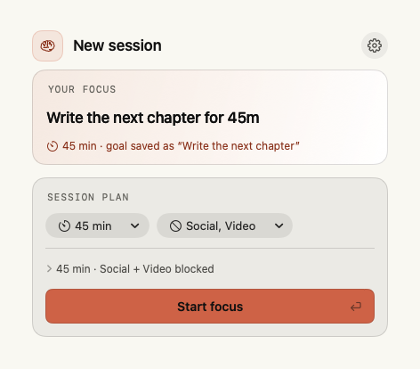
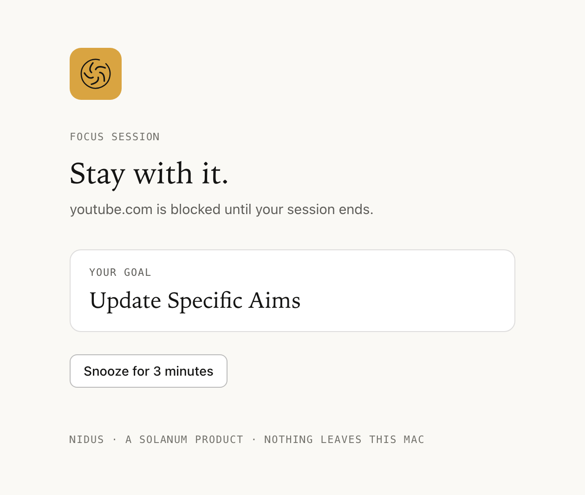
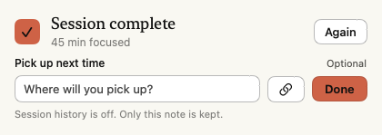

See the plan before you begin.
Your session preview brings the length, blocked categories and break together before Start. Open its details to check the rest. Choose a length from the menu and a duration in your goal follows along.

Blocked apps quit the moment they open. Blocked websites are replaced with a quiet page that reminds you what you're working on.
curl -fsSL https://raw.githubusercontent.com/samporter14/nidus/main/install.sh | zsh
Say what you are working on, choose a length and what to block, and press Start.
They're asked to quit the normal way, so anything unsaved gets its usual prompt. Settings can hide them instead.
It tells you how long you focused and how many times you were blocked, and asks whether you finished.
No snooze or pause during a session, and ending one early means typing “stop early” in the popover.
At rest it is a virus particle. When a session starts it becomes a brain, and fills as the session runs.
Pause or add five minutes from the popover. Snooze one app or site for a few minutes from its card or the block page.
Safari, Chrome, Brave, Chromium and Opera Air. When the session ends, every tab goes back to where it was. Firefox isn't supported: it offers no way to script its tabs.
Nidus keeps its own records locally. Optional history, Activity and sharing controls affect what it saves. Websites and Shortcuts you ask it to open may use online services. Read the privacy details.
nidus, n. Latin, nest. A breeding place; in particular, the place in a host where an organism lodges and multiplies.
Your session preview brings the length, blocked categories and break together before Start. Open its details to check the rest. Choose a length from the menu and a duration in your goal follows along.

After at least a minute of focused time, leave an optional note about where to pick up next—even for an unnamed session. The finish card and shared buttons keep the same quiet Solanum style.

App previews use fictional example data. Read the Nidus 0.4.4 release notes.